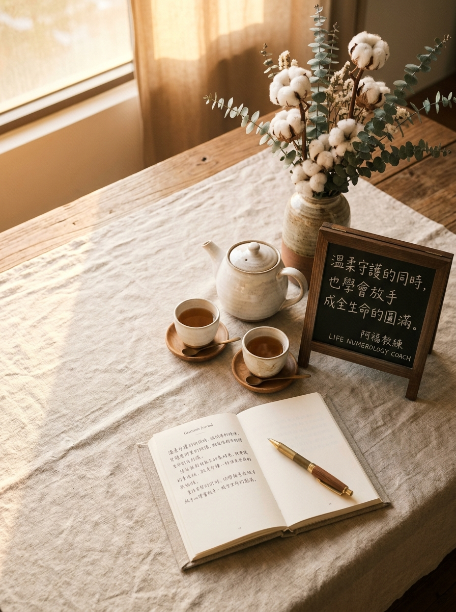

NOVEMBER 15 · GRACEFUL RELEASE & FULFILLMENT
11/15 壽星
生日快樂
「溫柔守護的同時，也學會放手成全生命的圓滿。」
生日數 15（內5 外1 合6：溫暖・照顧・療癒）
2026 流年 9（圓滿・釋懷・博愛・昇華）
生日數能量：溫暖・照顧・責任・療癒
流年 9 主題：圓滿・釋懷・博愛・昇華
A YEAR OF COMPLETION & GRACEFUL RELEASE
在溫柔放手與自我疼惜中，迎向生命最圓滿的豐收
迎向 2026 流年 9 的大收官週期，宇宙想給總是心繫他人的 15/6 號人一個深深的擁抱：身為內心熱愛自由（5）、行事果敢有擔當（1）、合為溫暖照料者（6）的壽星，你習慣把所有人的需求扛在肩上；然而今年最深刻的功課不是繼續無止境地付出，而是「溫柔放手、學會心疼自己」。卸下不再屬於你的沉重包袱，感謝過去九年的每一段歷練。當你騰出心靈的空間，明年全新的九年大運將為你帶來最璀璨的新生。
年度提問｜「那份讓我感到沉重與委屈的責任，我今天能不能溫柔地對自己說『我已經做得很好了』？」
YOUR ENERGY DJ · 6 號人的流年 9 圓滿點播站
當甘願付出的 6 號溫暖，走進斷捨離的流年 9
身為天生重情重義、捨不得別人受苦的 6 號壽星，走進「流年 9」的圓滿週期，這不是失去，而是生命層次的昇華！今天 DJ 特別為你調配流年 9 釋懷昇華歌單——溫柔卸下肩頭重擔，在感恩與寬恕中輕裝啟航！
LIFE NUMBER 9 · CLASSROOM PLAYLIST
9 號人課堂激勵與歡唱歌單（給 6 號人的流年 9 能量歌單）
這份歌單來自阿福教練生命靈數課堂中，專為流年 9 主題（圓滿・釋懷・博愛・昇華）所調配的經典曲目。點擊任一曲目即可開啟 YouTube 搜尋聆聽，陪伴你在新的一歲調頻對齊、綻放光芒！
- 01隱形的翅膀張韶涵｜希望開場・以博愛與格局開場，將善良化為展翅高飛的堅定羽翼（YouTube 搜尋）
- 02給自己的歌李宗盛｜歲月釋懷・放下對完美與救贖的執著，寬恕自己與他人（YouTube 搜尋）
- 03奉獻蘇芮｜博愛昇華・無私付出而不求回報的慈悲格局（YouTube 搜尋）
- 04海闊天空Beyond｜崇高理想・就算經歷風雨，依然堅持心中對自由與善意的承諾（YouTube 搜尋）
- 05彩虹張惠妹｜接納支持・以無差別的包容擁抱多元與脆弱（YouTube 搜尋）
- 06當你老了莫文蔚｜生命圓滿・歲月沉澱後的溫柔凝望與大愛陪伴（YouTube 搜尋）
- 07明天會更好群星｜大同願景・凝聚眾人心力，為世界送上最誠摯的集體祝福（YouTube 搜尋）
- 08野百合也有春天潘越雲｜看見價值・相信每個微小的生命都有綻放的時刻與崇高意義（YouTube 搜尋）
歌單依《生命靈數9號人_激勵九首與歡唱點播歌單》整理。點播連結均為 YouTube 官方影音搜尋結果；播放時請依授課場地與著作權規範使用。
願你的善良自帶光芒，在溫柔放手中找回輕盈自在，收穫最圓滿通透的幸福。
👉 11/15 壽星快來留言【🕊️】！為新的一歲許下最棒的心願！
#11月15日生日快樂 #生命靈數 #生日數15 #生日數6 #流年9 #溫柔放手 #圓滿昇華 #阿福教練